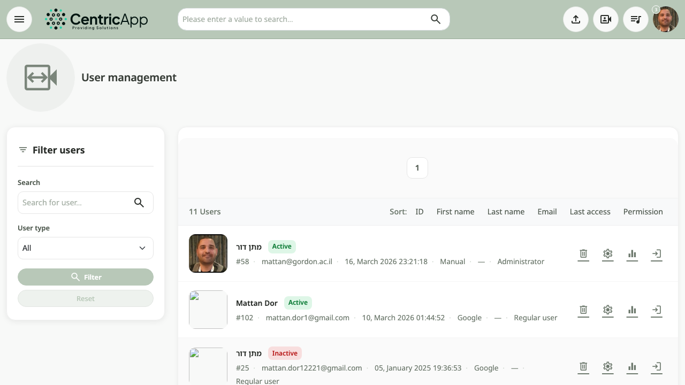
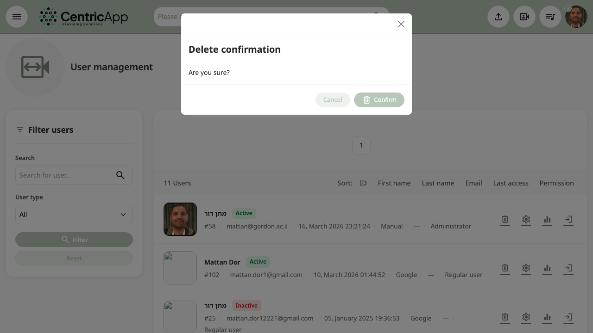

מבט כללי
עמוד ניהול משתמשים נגיש רק למשתמשים עם הרשאות מנהל. נכנסים אליו מהתפריט (למשל מתפריט המשתמש – ניהול משתמשים) או בכתובת /user/admin (למשל https://dev.video/user/admin). בעמוד מוצגת רשימת משתמשים בכרטיסים, סינון לפי חיפוש וסוג משתמש, ופעולות לכל משתמש.

כניסה לעמוד
בתפריט העליון (תפריט המשתמש / פרופיל) בחרו ניהול משתמשים. האפשרות מופיעה רק למנהלים.
סינון (סרגל צד)
בצד שמאל:
- חיפוש – שדה לחיפוש משתמש לפי מזהה, שם פרטי, שם משפחה, דוא״ל או שם משתמש.
- סוג משתמש – רשימה: הכל, מנהלן, משתמש רגיל.
- סנן – הפעלת הסינון לפי השדות למעלה.
- איפוס – ניקוי הסינון וחזרה לרשימה המלאה.
מיון ותוצאות
מעל רשימת הכרטיסים מוצגים מספר התוצאות וקישורי מיון: מזהה, שם פרטי, שם משפחה, דוא״ל, גישה אחרונה, הרשאה. לחיצה על כותרת ממיינת את הרשימה. יש גם עימוד (פאגינציה) למעלה ולמטה.
כרטיס משתמש
כל משתמש מוצג בכרטיס עם:
- תמונה / אווטר – לחיצה מובילה לפרופיל המשתמש.
- שם – שם פרטי ומשפחה; לחיצה לפרופיל.
- תג סטטוס – פעיל או לא פעיל.
- מטא־דאטה – מזהה, דוא״ל, גישה אחרונה, שיטת אימות, סוג (מנהלן / משתמש רגיל).
- פעולות – אייקונים: מחיקה, הגדרות משתמש, צפייה במדדים, התחבר כ.
- מחיקה – פותח חלון לאישור מחיקת המשתמש.
- הגדרות משתמש – מעבר לדף עריכת פרטי המשתמש (פרופיל, הרשאות וכו').
- צפייה במדדים – מעבר למדדי המשתמש.
- התחבר כ – התחברות למערכת כאותו משתמש (לצורכי תמיכה/בדיקה).

מחיקת משתמש
לחיצה על אייקון המחיקה בכרטיס פותחת חלון (מודל) לאישור. באישור – המשתמש נמחק מהמערכת והדף מתעדכן (או מוצגת הודעת הצלחה). פעולה זו בדרך כלל לא הפיכה.
הגדרות משתמש ופרופיל
לחיצה על הגדרות משתמש (אייקון גלגל שיניים) מובילה לדף /user/settings/{id} – שם ניתן לערוך פרטים, להפעיל או לבטל את המשתמש ולנהל הרשאות.